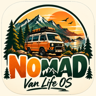

Support
Need a hand? Email nomadvanlifeos@gmail.com and we'll get back to you, usually within a day.
Common questions
How do I install NOMAD on my phone?
iPhone: open the app in Safari → Share → Add to Home Screen. Android: open it in Chrome → ⋮ → Install app. It's also coming to the App Store and Google Play.
Location isn't working
iPhone: Settings → Privacy & Security → Location Services → Safari Websites (or NOMAD) → While Using. Android: Settings → Apps → Chrome (or NOMAD) → Permissions → Location → Allow.
Does it work with no signal?
Yes. Places you've loaded, saved spots, saved trips, your van data and the guides all work offline. Open the areas you're heading to while you have signal and they'll be stored for later.
How do I get or restore Pro?
Subscriptions: open Pro in the app and tap Restore purchase, then enter the restore key shown after you paid. New phone? Restore your NOMAD ID with your recovery key (Me → NOMAD ID) and Pro comes back with everything else. Lost a key? Email us with your Stripe receipt.
How do I cancel my subscription?
Web: use the manage link in your Stripe receipt. iPhone: Settings → your name → Subscriptions. Android: Play Store → Payments & subscriptions.
How do I delete my data?
In the app go to Me → Delete my data. This wipes everything on your device and your community posts. Or email us.
A place is missing or wrong
Long-press the map or use "Add a place". Corrections help the whole crew.
Read our Privacy Policy and Terms of Use.